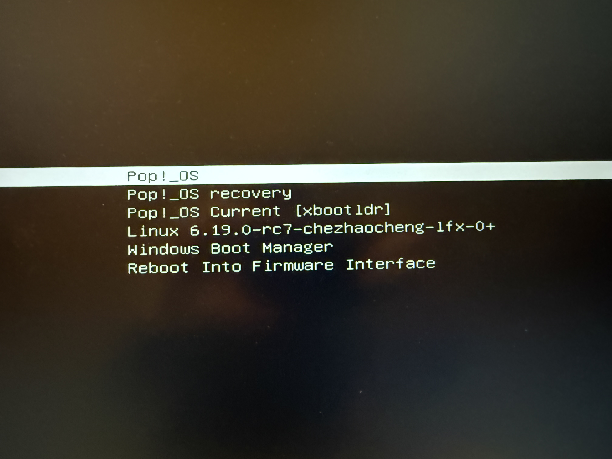

XBOOTLDR Configuration
I am a PopOS user, and recently I want to test kernels
modified and compiled by myself.
When installing the kernels, I have errors complaining about
/boot/efi is full. I decide to go for the XBOOTLDR option
which should allow me to extend the EFI partition, and it can be
upto 32GB (max size of FAT32).
Here’s the documentation I used: https://wiki.archlinux.org/title/Systemd-boot
XBOOTLDR is an optional ‘extended boot loader partition’ that systemd-boot can read from the same physical disk as the ESP. It allows storing additional kernels and initrds safely without touching the main EFI partition.
Step 1 : Prepare the partition
Because I need to shrink my root partition, I booted into PopOS recovery.
Then I used gparted. After getting some empty space,
I created an 8GB primary partition in FAT32,
then I also toggle its esp flag on.
Step 2 : Mount the partition
Went back to my regular PopOS, I added this line to /etc/fstab
UUID=4282-6209 /boot/xbootldr vfat defaults,umask=0077 0 2
Here, the UUID is derived from (nvme0n1p5 is the created partition)
> blkid /dev/nvme0n1p5
/dev/nvme0n1p5: LABEL_FATBOOT="XBOOTLDR" LABEL="XBOOTLDR" UUID="4282-6209" BLOCK_SIZE="512" TYPE="vfat" PARTLABEL="5"
Now, umount -a will mount this XBOOTLDR partition at boot/xbootldr.
Step 3 : Set the parition type
In that ArchWiki page, it says: The XBOOTLDR partition must have a partition type GUID of bc13c2ff-59e6-4262-a352-b275fd6f7172 [1] (ea00 type for gdisk, xbootldr type for fdisk).
So I changed the partition type via gdisk
# sudo gdisk /dev/nvme0n1
Command (? for help): t
Partition number (1-5): 5
Current type is EA00 (XBOOTLDR partition)
Hex code or GUID (L to show codes, Enter = EA00): ea00
Changed type of partition to 'XBOOTLDR partition'
Command (? for help): w
Do you want to proceed? (Y/N): Y
Without setting the partition type, next command will fail.
Step 4 : Tell bootctl about this partition (might not need)
Then, run this command
sudo bootctl --esp-path=/boot/efi --boot-path=/boot/xbootldr/ install
Since bootctl list output didn’t change after this command
(reboot needed), I am not sure if this command is really needed.
Step 5 : Adding image and config in XBOOTLDR
Here’s my original efi folder
/b/efi# ls loader/entries/
# Pop_OS-current.conf Recovery-CDAE-FADF.conf
/b/efi# cat loader/entries/Pop_OS-current.conf
# title Pop!_OS
# linux /EFI/Pop_OS-e1db91ab-9998-4921-ac70-317989e51806/vmlinuz.efi
# initrd /EFI/Pop_OS-e1db91ab-9998-4921-ac70-317989e51806/initrd.img
# options root=UUID=e1db91ab-9998-4921-ac70-317989e51806 ro quiet loglevel=0 systemd.show_status=false splash
/b/efi# ls EFI/Pop_OS-e1db91ab-9998-4921-ac70-317989e51806/
# cmdline initrd.img vmlinuz.efi
I followed the same pattern to add kernel images in the xbootldr folder
/b/xbootldr# ls loader/entries/
# linux-6.19-rc7-chezhaocheng-lfx-0.conf linux-current.conf
/b/xbootldr# cat loader/entries/linux-current.conf
# title Pop!_OS Current [xbootldr]
# linux /EFI/Linux/vmlinuz-current
# initrd /EFI/Linux/initrd-current.img
# options root=UUID=e1db91ab-9998-4921-ac70-317989e51806 ro quiet
/b/xbootldr# cat loader/entries/linux-6.19-rc7-chezhaocheng-lfx-0.conf
# title Linux 6.19.0-rc7-chezhaocheng-lfx-0+
# linux /EFI/Linux/vmlinuz-6.19.0-rc7-chezhaocheng-lfx-0+
# initrd /EFI/Linux/initrd.img-6.19.0-rc7-chezhaocheng-lfx-0+
# options root=UUID=e1db91ab-9998-4921-ac70-317989e51806 ro quiet splash
/b/xbootldr# ls EFI/Linux/
# initrd-current.img
# initrd.img-6.19.0-rc7-chezhaocheng-lfx-0+
# vmlinuz-6.19.0-rc7-chezhaocheng-lfx-0+
# vmlinuz-current
Updates to the xbootldr/loader or xbootldr/EFI
won’t reflect in bootctl list output in real time.
So debug is a bit difficult, but a reboot will show you if those works.
Result

So now I have the original EFI entries, AND my custom built linux kernels.